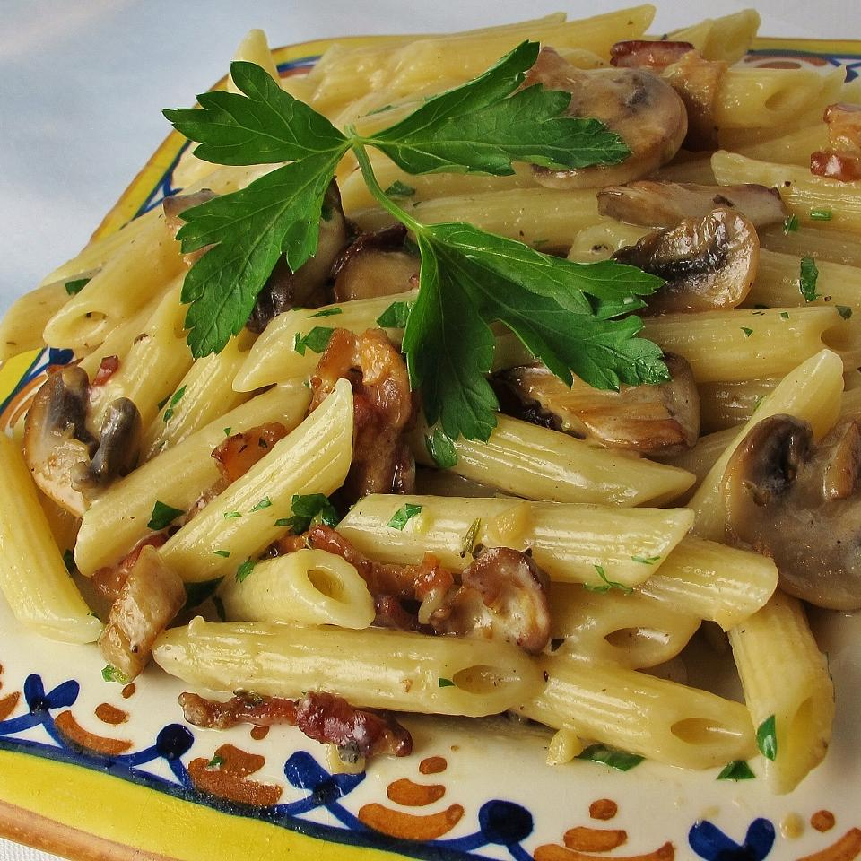

Penne with Pancetta and Mushrooms

Description
I threw this dish of penne pasta, pancetta bacon, and mushrooms together one afternoon for lunch.
Ingredients
- 1 (12 ounce) package penne pasta
- 1 (3 ounce) package pancetta bacon, diced
- 2 tablespoons butter
- 1 (10 ounce) package sliced mushrooms
- 1 tablespoon minced garlic
- ½ cup heavy cream
- ¼ teaspoon Italian seasoning
- ¼ cup grated Parmesan cheese, or to taste
Steps
- Bring a large pot of lightly salted water to a boil. Add pasta and cook for 8 to 10 minutes or until al dente; drain and set aside. Meanwhile, cook pancetta in a large skillet over medium heat until browned but not crispy, about 5 minutes. Drain on a paper towel-lined plate and set aside.
- Pour pancetta grease out of the skillet, and add butter. Increase heat to medium-high and stir in sliced mushrooms. Cook and stir until the mushrooms have softened and released their liquid. Add the minced garlic, and cook 2 more minutes. Reduce heat to medium-low, then stir in cream and Italian seasoning. Simmer until the sauce has thickened slightly.
- To serve, toss the cooked penne with the sauce, and sprinkle with Parmesan cheese.